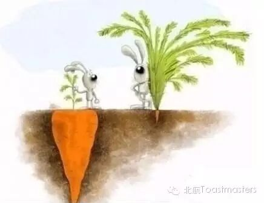
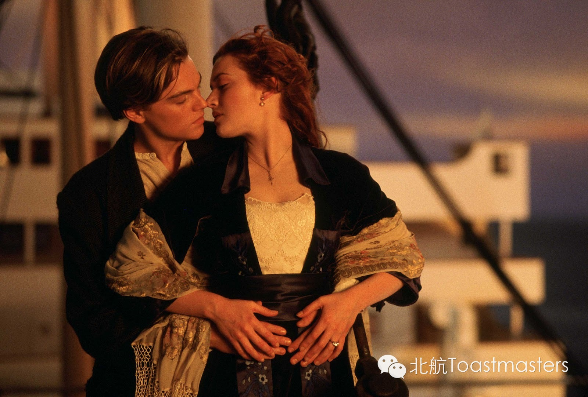

Mars vs. Venus
Time: 19:30-21:30, Friday, Mar. 20
Venue: Room B102, New Main Building, Beihang University
Toastmaster: Keven
Table Topic Master: Grace
Men come from Mars, where there is no water, no food, and it's rough planet. While, our lovely girls are from VENUS. It's a lovely place! Romantic! Full of love, right?
This is a true story whether you agree or not. They are different! Look, they are having a conversation, but in two distinct frequencies.
You know, men always complain that if they offer solutions to problems that women bring up in conversation, the women are not necessarily interested in solving those problem. Instead, women want to talk about them. Emmm, talk out feelings, rather than solve them.
Can they understand each other?
Prepared Speech
The Power of Deleting
CC1 Mauna Loa
We are facing so many crap you know, all day long. Different kinds of clothes, various digital items, especially lot of useless information. What can we do about that? I know it's useless, but somehow, they turned out to be attractive. Maybe Loa get a way to delete them.
Prepared Speech
Don't Major in the Minor
CC4 Lucia

Which one is Major? Which one is Minor?
Well, we believe we can tell them right? At least in most situations. But the truth is, there are always some tiny little things that don't matter in our minds, are fundamental. Let's here Lucia's points of view.
Prepared Speech
Jack & Rose
CC5 Jack

As we all know, Jack love Rose. They are something of a item, right? But things didn't happen as you expected. Jack get a lot of Roses. Yeah, that's true, our Jack is such a welcomed smart boy. Come and see him talking about his lovers.
Map
Our meeting venue changed to RoomB102, New Main Building, Beihang University (北航新主楼B102房间). And you can phone to Keven for help.
TEL: 15810539853
See you in the meeting!

https://mp.weixin.qq.com/s/eqpASiNrgcY11EDmLEn7ZA
本页为抢救式本地归档，图文已永久保存。